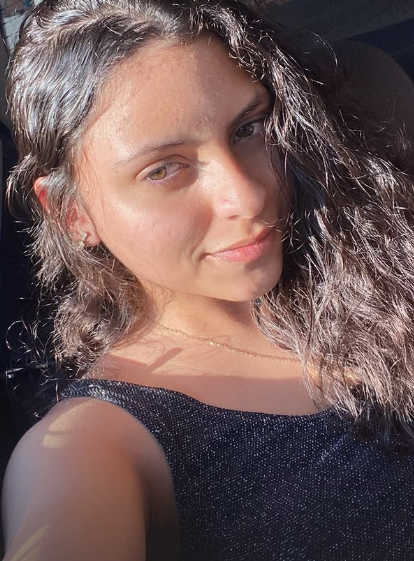

Quem somos?
Com o intuito de criar um site prático e divertido, criamos o gerador de imagens por IA!
Ele funciona com API e outras aplicações.

Thainá Pontes é uma estudante de ADS na Cesar School. Atualmente, ela está estudando HTML, CSS e
suas aplicações.
Sempre apaixonada por tecnologia, ela começou seus estudos na área de programação há pouco tempo,
tendo seu primeiro
contato com os códigos em um curso gratuito de programação, o Com Domínio Digital.